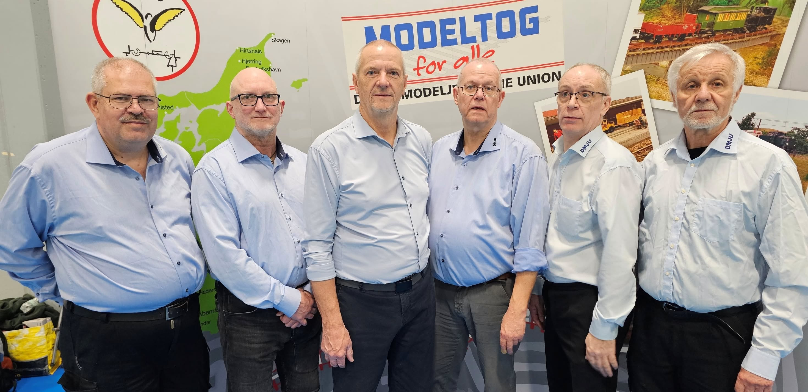

Historien bag DMJU
Den 09. april 1961 blev Dansk Model Jernbane Union i dagligt tale kaldt DMJU, stiftet på en generalforsamling med det formål er at fremme samarbejdet mellem alle danske modeljernbaneklubber og at fremme interessen for modeljernbane hobbyen generelt. DMJU har siden vokset sig til i dag at repræsentere 105 klubber fordelt på alle størrelser og drift type og som samt hvert år afholder Danmarks største modeltogs udstilling.
Et tilbageblik om stiftelsen af dmju og morop
Poul Erik Clausen, der var næstformand i DMJK, fremsatte i 1950 på DMJKs generalforsamling, sammen med Poul Erik Harby, nogle ret vidtrækkende forslag hvoraf det ene gik ud på, at DMJK skulle søge kontakt med landets andre MJ klubber med henblik på dannelse af en fælles Union. Dette forslag kom ikke til realitets drøftelse på generalforsamlingen som følge af en heftig debat om andre emner, men Clausen opgav ingen lunde tanken om et nærmere samarbejde mellem klubberne
På DMJKs ekstraordinære generalforsamling den 8. maj 1950, blev Clausen valgt til formand for DMJK, en post som han varetog på forbilledlig vis indtil sin alt for tidlige død den 27. juli 1959, få dage efter afslutningen af den 1. MOROP-kongres i Danmark. Denne internationale sammenslutning af MJ-klubber (nu også af klubber fra andre jernbane interesserede) er faktisk en videreførelse af større sammenhæng af UNION tankerne fra 1950. Sådanne tanker gærede nemlig også i andre lande, hvilket gav sig udslag i, at der bliver afholdt internationale MJ konferencer i Rüdesheim i 1952 og i München 1953. Fra Dansk side deltog blandt andet Clausen og *James Steffensen i disse konferencer, da det var besluttet, at man ved næste konference i Genua i eftersommeren 1954, ville stifte en international sammenslutning, udsendte DMJK i juni 1954 en rundskrivelse til andre danske MJ klubber, hvori det foresloges, at de danske MJ klubber skulle tilslutte sig den internationale sammenslutning, idet DMJK indtil videre ville være villige til at fungere som sekretariat og mellemled. Syv af de 9 tilskrevne klubber accepterede forslaget, og ”Danske model jernbane klubber”. DMK kom herved til at stå som medstifter af MOROP. Reelt var det Clausen personligt, der indtil sin død fungerede som sekretariat og mellemled, idet hans talrige tjenesterejser bragte ham rundt i hele landet, hvilket gav ham gode muligheder for hyppig kontakt med provins-klubberne. Samarbejdet mellem de danske MJ-klubber fortsatte på det beskrevne løse grundlag i hele 7 år, og først i 1961 blev Clausen og Harbys oprindelige unionstanke fra 1950 virkelig gjort ved stiftelsen af det, der i dag hedder Dansk Model jernbane Union, forkortet DMJU.
*James Steffensen var én af medstifterne af MOROP og deltog i mange år i MOROPs arbejde med udviklingen af NEM normerne.
James Steffensen blev udnævnt til æresmedlem i MOROP. Ligeledes var han æresmedlem i DMJK indtil sin død i 1988.
Den hjemmeside du besøger lige nu er den primære kommunikations linie mellem DMJU, medlemsklubberne og offentligheden – det er her nyhederne først læses og kommende events offentliggøres, og det er her du finder alle praktiske oplysninger om modeljernbanehobbyen i Danmark og udlandet. Og det er også her du finder kontakt info til alle de mere end 105 modeljernbaneklubber der er medlem af DMJU.
DMJU er den officielle sammenslutning af modeljernbaneklubber i Danmark, og blev stiftet i 1961. DMJU’s formål er at fremme samarbejdet mellem alle danske modeljernbaneklubber og at fremme interessen for modeljernbane hobbyen generelt.
DMJU er medlem af den europæiske sammenslutning MOROP (Union Européenne des ModélistesFerroviaires et des Amis des Chemins de Fer)), der har hovedsæde i Bern i Schweiz, og deltager så aktivt som muligt i det internationale samarbejde. DMJU har for nylig taget initiativ til et tættere samarbejde mellem de nordiske lande, og forhandlinger om dette fortsætter i 2015.
I marts måned 1994 arrangerede DMJU for første gang modeljernbane udstilling i “DSB-Kursuscenter Østerport” i København. Siden er det blevet til en række udstillinger, der afholdes skiftevis øst og vest for Storebælt. De sidst afholdte har været i Køge (nu Taastrup) og Sydbank Arena (Kolding). Der arbejdes hele tiden på, at gøre udstillingerne bedre og bedre og vise dansk modeljernbane. Et af de faste indslag er en diorama konkurrence. Som inspiration inviteres gerne et udenlandsk anlæg til at deltage i udstillingen. Det er således den 29. DMJU udstilling der åbner næste gang i Vejle marts 2026. Du kan finde flere oplysninger under menu punktet ’udstilling’.
Da interessen i Danmark i udtalt grad er for at køre med modeller af danske tog, afholder DMJU en afstemning blandt medlemmerne om ”Årets model” for at fremme interessen for at producere til det danske marked. Der er flere kategorier, men alt handler om danske tog og dansk tilbehør. De vindende producenter får et flot diplom som tegn på æren.
Nye tiltag vil sikkert se dagens lys fremover, således at DMJU fortsat ses som en aktiv, nyttig og fornyende forening til fremme af danske modeljernbaneklubbers og entusiasters interesser.
